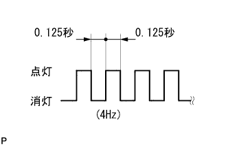
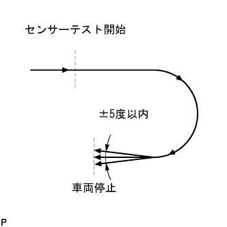
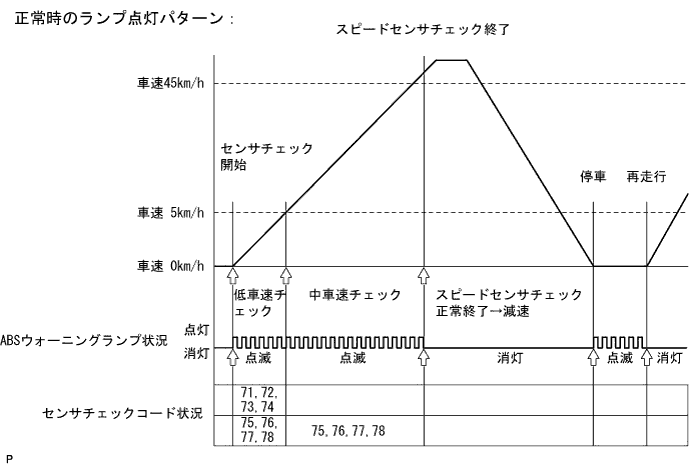

Test Mode Activation Method (TaSCAN)
Turn the IG OFF and connect the SST (TaSCAN) to DLC3.
- SST
- 09991-70200
Apply the parking brake.
Turn IG ON.
Select "Diagnosis" → "System Diagnosis / Chassis" → "System Name / ABS/VSC" → "Mode Change Check" in that order on the SST (TaSCAN) screen to switch to test mode.
 |
Test Mode Activation Method (DLC3 Short)
Apply the parking brake.
Turn the IG OFF and connect terminals 12 (TS) ←→ 4 (CG) of DLC3.
- SST
- 09843-18040
- ■ NOTICE ■
- Never connect the connector in the wrong position, as this will cause a malfunction.
Turn IG ON.
 |
Test Mode Display Check
When test mode is activated, the ABS warning light comes on for approximately 3 seconds and then blinks in test mode, and "VSC TEST MODE" is displayed on the multi-information display and blinks at 4Hz intervals.
- ■ NOTICE ■
Conditions for Retaining Test Mode Codes DLC3 IG ON IG OFF IG OFF→ON TS-CG terminals connected Memory retained Memory retained Memory retained TS-CG terminals disconnected Memory retained Memory retained Memory cleared
Yaw Rate Sensor & G Sensor 0 Point Check
Turn IG ON.
Move the shift lever to P and keep the vehicle stopped on a level surface for 2 seconds or more.
- □ HINT □
- The test mode display in the meter does not change.
- If the sensor is normal and the above conditions are met when test mode is activated, the check has ended normally.
 |
Yaw Rate Sensor Output Check
At a vehicle speed of 5km/h or more, without spinning the wheels, turn the steering wheel 90° or more and hold it for 1 seconds or more while driving in a 180° turn.
- ■ NOTICE ■
- The vehicle direction at the start and end of the turn must be within 180 ±5°.
- Do not move the shift lever to P while turning. Also, do not turn the IG switch OFF.
- □ HINT □
- The turning direction may be either way.
- The vehicle speed may be changed and the vehicle may be stopped or reversed while turning, but complete the turn within 20 seconds.
Move the shift lever to P. At that time, the buzzer sounds for 3 seconds; check that the sensor check has ended.
- ■ NOTICE ■
- If the buzzer does not sound, check the test mode codes.
- If there are no malfunctions in the test mode codes and the buzzer does not sound even after performing the sensor check several times, inspect the buzzer circuit.
- □ HINT □
- Even if the VSC sensor check ends normally, the meter shows the test mode display.
Master Cylinder Pressure Sensor Check
With the vehicle stopped (engine stopped), release the brake pedal for 1 seconds or more, then quickly depress the pedal with a force of 98N*m{999kgf*cm} or more, and check that the ABS warning light comes on for 3 seconds.
- □ HINT □
- While the ABS warning light is on, keep the brake pedal depressed with a force of 98N*m{999kgf*cm} or more.
- During test mode, the ABS warning light comes on for approximately 3 seconds each time the above pedal operation is performed.
- If the master cylinder pressure sensor check does not end, depressing the brake indiscriminately further reduces the vacuum, which may make it difficult to end the sensor check.
- When vacuum is insufficient, the master cylinder pressure sensor check may not end. In that case, idle the engine to ensure sufficient vacuum.
- If the brake is depressed firmly when vacuum is insufficient, the brake warning light may come on due to failure control. In that case, idle the engine to ensure sufficient vacuum.
Speed Sensor Check
With the steering wheel in the straight-ahead position, start off without spinning the wheels, accelerate to 45km/h or more, and check that the ABS warning light goes off.
- ■ NOTICE ■
- Before performing the speed sensor check, complete the yaw rate sensor, deceleration sensor and master pressure sensor checks.
- If the sensor check is started with the steering wheel turned, or if the wheels are spun, the speed sensor check may not end.
- After the ABS warning light goes off, driving at 80Km/h or more causes the test mode codes to be stored again, so decelerate and stop before reaching 80Km/h.
- If the sensor check has not ended, the ABS warning light blinks even while driving and ABS does not operate.
- If the sensor check is started with the steering wheel turned, the ABS warning light may not go off after the speed sensor check ends.
- □ HINT □
- When the speed sensor check ends normally, the ABS warning light is off while driving and blinks in test mode while stopped.

Sensor Check Completion
When the sensor check ends normally, the ABS warning light blinks (test mode display) while the vehicle is stopped and is off while the vehicle is being driven.
- ■ NOTICE ■
- The sensor check is completed when the yaw rate sensor, G sensor, speed sensor and master cylinder pressure sensor checks have ended normally.
- If the sensor check has not ended, the ABS warning light blinks even while driving and ABS does not operate.
- If a DTC is detected during test mode, the ABS warning light or VSC warning light comes on.
Reading Test Mode Codes (TaSCAN)
In test mode, check the DTCs using the SST (TaSCAN).
- SST
- 09991-70200
 |
Reading Test Mode Codes (DLC3 Short)
Turn IG OFF.
Using SST, connect terminals 12 (TS) and 13 (TC) ←→ 4 (CG) of DLC3.
- SST
- 09843-18040
- ■ NOTICE ■
- Do not connect the connector in the wrong position, as this will cause a malfunction.
- Perform this with the vehicle stopped.
Turn IG ON.
Read the ABS test mode codes and VSC test mode codes displayed on the multi-information display.
- ■ NOTICE ■
- If only DTCs are displayed, repair the malfunctioning area and clear the DTCs.
- If only test mode codes are displayed, perform test mode again.
- If both DTCs and test mode codes are displayed, repair the malfunctioning area, clear the DTCs, and perform the test mode inspection again.
- □ HINT □
- Test mode codes and DTCs are displayed.
Test Mode Ending Method (TaSCAN)
Select "Diagnosis" → "System Diagnosis / Chassis" → "System Name / ABS/VSC" → "Mode Change" in that order on the SST (TaSCAN) screen to switch to normal mode.
Turn IG OFF and disconnect SST (TaSCAN).
Test Mode Ending Method (DLC3 Short)
Turn the IG OFF and disconnect terminals 13 (TC) and 12 (TS) ←→ 4 (CG) of DLC3.
Turn IG ON.
- □ HINT □
- If the TS ←→ CG terminals are disconnected with the IG ON, test mode continues.
- If the IG is turned ON with the TS ←→ CG terminals connected, test mode continues from the previous session.